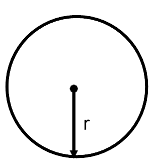

- (a)
- At what rate is the circumference of the circle changing when the radius is 10 inches?
- (b)
- At what rate is the area of the circle changing when the radius is 12 inches? We know: \({\frac {dr}{dt}}=2\) inches per minute and we want to find \(\frac {dA}{dt}\) when \(r=12\).\begin{align*} A&=\pi r^2\\ {\frac {dA}{dt}}&=2\pi r{\frac {dr}{dt}}\\ \eval {{\frac {dA}{dt}}}_{r=12}&=2 \pi (12)(2)\\ \eval {{\frac {dA}{dt}}}_{r=12}&=48 \pi \ \text {inches squared per minute} \end{align*}